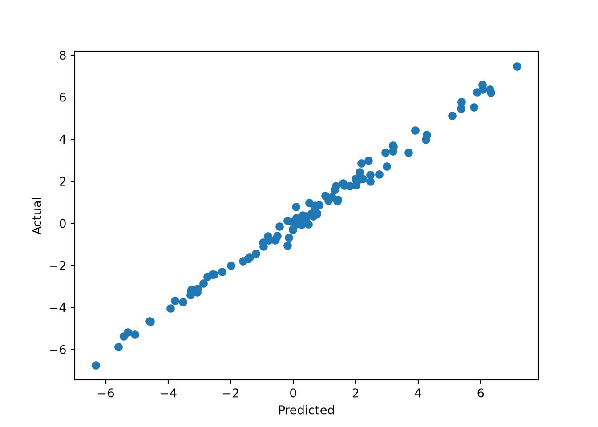
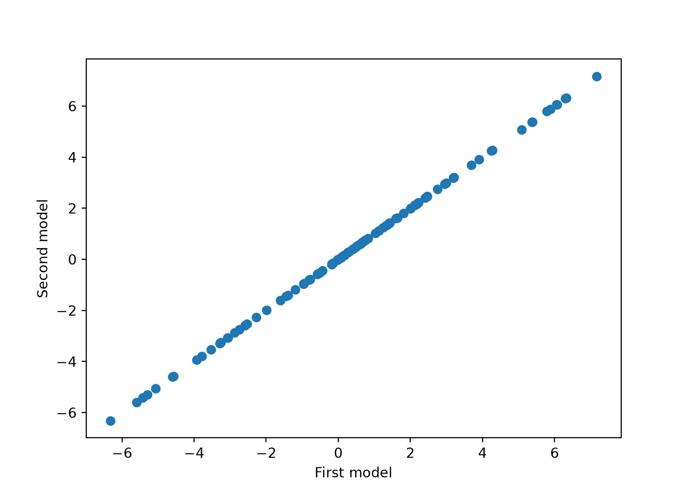
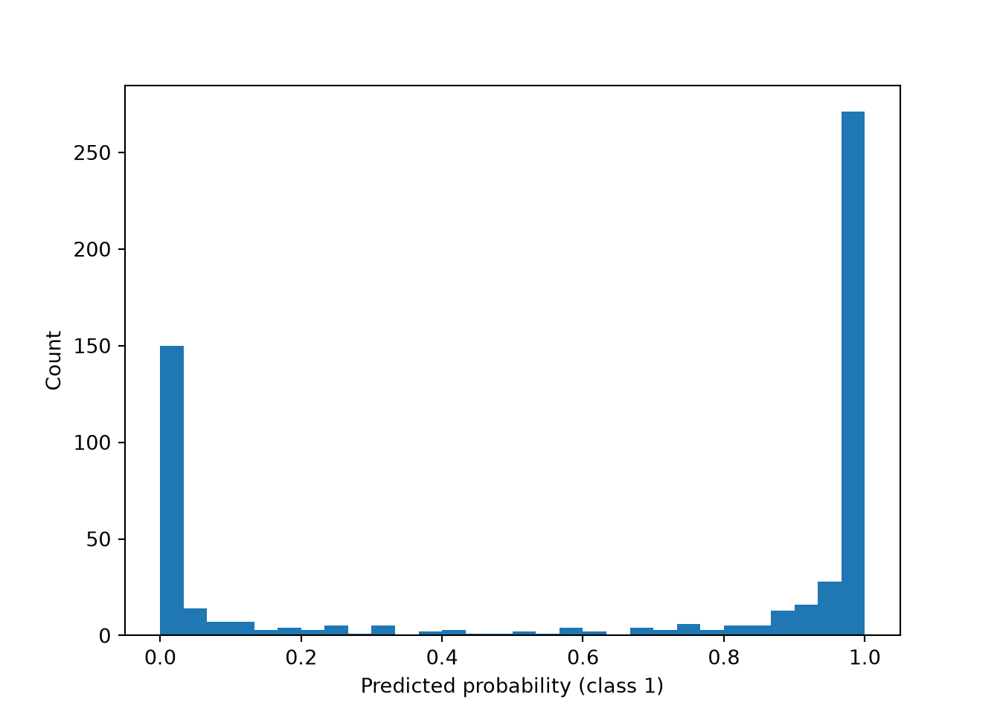
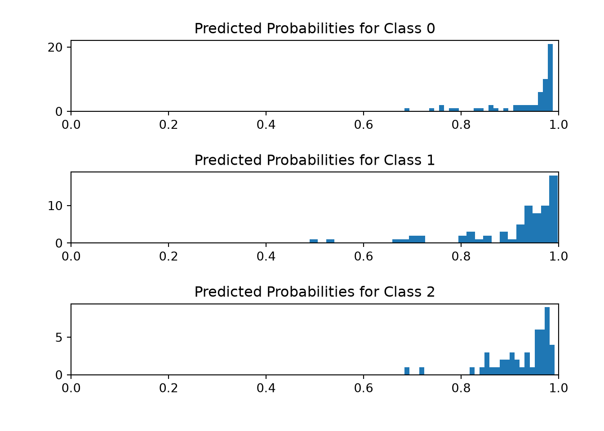

import matplotlib.pyplot as plt
import numpy as np
from sklearn.datasets import load_wine, load_breast_cancer
from sklearn.model_selection import GridSearchCV
from sklearn.multiclass import OneVsRestClassifier
from stochtree import (
StochTreeBARTRegressor,
StochTreeBARTBinaryClassifier,
)Using Stochtree via Sklearn-Compatible Estimators in Python
This vignette is python-specific and no similar interface is implemented for R.
stochtree.BARTModel is fundamentally a Bayesian interface in which users specify a prior, provide data, sample from the posterior, and manage and inspect the resulting posterior samples. However, the basic BART model
\[y_i \sim \mathcal{N}\left(f(X_i), \sigma^2\right)\]
involves samples of a nonparametric function \(f\) which estimates the expected value of \(y\) given \(X\). Averaging over these draws, the posterior mean \(\bar{f}\) alone may satisfy some supervised learning use cases. To serve this use case straightforwardly, stochtree offers scikit-learn-compatible estimator wrappers around BARTModel which implement the familiar sklearn API.
StochTreeBARTRegressor: continuous outcomes — providesfit,predict, andscoreStochTreeBARTBinaryClassifier: binary outcomes via probit BART — providesfit,predict,predict_proba,decision_function, andscore- Multi-class classification is supported by wrapping
OneVsRestClassifieraroundStochTreeBARTBinaryClassifier
Setup
random_seed = 1234
rng = np.random.default_rng(random_seed)BART Regression
We simulate simple regression data to demonstrate the continuous outcome case.
n = 100
p = 10
X = rng.normal(size=(n, p))
y = X[:, 0] * 3 + rng.normal(size=n)We fit a BART regression model by initializing a StochTreeBARTRegressor and calling fit(). Since BARTModel is configured primarily through parameter dictionaries, downstream parameters are passed through as such — here we only specify the random seed.
reg = StochTreeBARTRegressor(general_params={"random_seed": random_seed, "num_threads": 1})
reg.fit(X, y)StochTreeBARTRegressor(general_params={'num_threads': 1, 'random_seed': 1234})In a Jupyter environment, please rerun this cell to show the HTML representation or trust the notebook. On GitHub, the HTML representation is unable to render, please try loading this page with nbviewer.org.
Parameters
| num_gfr | 10 | |
| num_burnin | 0 | |
| num_mcmc | 100 | |
| general_params | {'num_threads': 1, 'random_seed': 1234} | |
| mean_forest_params | None | |
| variance_forest_params | None | |
| rfx_params | None |
We can then predict from the model and compare posterior mean predictions to the true outcome.
pred = reg.predict(X)
plt.scatter(pred, y)
plt.xlabel("Predicted")
plt.ylabel("Actual")
plt.show()
We can also verify determinism by running the model again with the same seed and comparing predictions.
reg2 = StochTreeBARTRegressor(general_params={"random_seed": random_seed, "num_threads": 1})
reg2.fit(X, y)StochTreeBARTRegressor(general_params={'num_threads': 1, 'random_seed': 1234})In a Jupyter environment, please rerun this cell to show the HTML representation or trust the notebook. On GitHub, the HTML representation is unable to render, please try loading this page with nbviewer.org.
Parameters
| num_gfr | 10 | |
| num_burnin | 0 | |
| num_mcmc | 100 | |
| general_params | {'num_threads': 1, 'random_seed': 1234} | |
| mean_forest_params | None | |
| variance_forest_params | None | |
| rfx_params | None |
pred2 = reg2.predict(X)
plt.scatter(pred, pred2)
plt.xlabel("First model")
plt.ylabel("Second model")
plt.show()
Cross-Validating a BART Model
While the default hyperparameters of BARTModel are designed to work well out of the box, we can use posterior mean prediction error to cross-validate the model’s parameters. Below we use grid search to consider the effect of several BART parameters:
- Number of GFR iterations (
num_gfr) - Number of MCMC iterations (
num_mcmc) num_trees,alpha, andbetafor the mean forest
param_grid = {
"num_gfr": [10, 40],
"num_mcmc": [0, 1000],
"mean_forest_params": [
{"num_trees": 50, "alpha": 0.95, "beta": 2.0},
{"num_trees": 100, "alpha": 0.90, "beta": 1.5},
{"num_trees": 200, "alpha": 0.85, "beta": 1.0},
],
}
grid_search = GridSearchCV(
estimator=StochTreeBARTRegressor(general_params={"num_threads": 1}),
param_grid=param_grid,
cv=5,
scoring="r2",
n_jobs=1, # n_jobs=-1 deadlocks when stochtree's C++ thread pool is active
)
grid_search.fit(X, y)GridSearchCV(cv=5,
estimator=StochTreeBARTRegressor(general_params={'num_threads': 1}),
n_jobs=1,
param_grid={'mean_forest_params': [{'alpha': 0.95, 'beta': 2.0,
'num_trees': 50},
{'alpha': 0.9, 'beta': 1.5,
'num_trees': 100},
{'alpha': 0.85, 'beta': 1.0,
'num_trees': 200}],
'num_gfr': [10, 40], 'num_mcmc': [0, 1000]},
scoring='r2')In a Jupyter environment, please rerun this cell to show the HTML representation or trust the notebook. On GitHub, the HTML representation is unable to render, please try loading this page with nbviewer.org.
Parameters
StochTreeBARTRegressor(general_params={'num_threads': 1},
mean_forest_params={'alpha': 0.9, 'beta': 1.5,
'num_trees': 100},
num_gfr=40, num_mcmc=0)Parameters
| num_gfr | 40 | |
| num_burnin | 0 | |
| num_mcmc | 0 | |
| general_params | {'num_threads': 1} | |
| mean_forest_params | {'alpha': 0.9, 'beta': 1.5, 'num_trees': 100} | |
| variance_forest_params | None | |
| rfx_params | None |
Note that we set n_jobs=1 above to avoid deadlocks arising from interactions between reticulate (which renders these python vignettes), joblib, and stochtree’s own C++ multithreading model. Users running this vignette interactively or as a script do not need to fix n_jobs=1.
cv_best_ind = np.argwhere(grid_search.cv_results_['rank_test_score'] == 1).item(0)
best_num_gfr = grid_search.cv_results_['param_num_gfr'][cv_best_ind].item(0)
best_num_mcmc = grid_search.cv_results_['param_num_mcmc'][cv_best_ind].item(0)
best_mean_forest_params = grid_search.cv_results_['param_mean_forest_params'][cv_best_ind]
best_num_trees = best_mean_forest_params['num_trees']
best_alpha = best_mean_forest_params['alpha']
best_beta = best_mean_forest_params['beta']
print_message = f"""
Hyperparameters chosen by grid search:
num_gfr: {best_num_gfr}
num_mcmc: {best_num_mcmc}
num_trees: {best_num_trees}
alpha: {best_alpha}
beta: {best_beta}
"""
print(print_message)
Hyperparameters chosen by grid search:
num_gfr: 40
num_mcmc: 0
num_trees: 100
alpha: 0.9
beta: 1.5BART Classification
Binary Classification
We load a binary outcome dataset from sklearn.
dataset = load_breast_cancer()
X = dataset.data
y = dataset.targetWe fit a binary classification model using StochTreeBARTBinaryClassifier.
clf = StochTreeBARTBinaryClassifier(general_params={"random_seed": random_seed, "num_threads": 1})
clf.fit(X=X, y=y)StochTreeBARTBinaryClassifier(general_params={'num_threads': 1,
'random_seed': 1234})In a Jupyter environment, please rerun this cell to show the HTML representation or trust the notebook. On GitHub, the HTML representation is unable to render, please try loading this page with nbviewer.org.
Parameters
| num_gfr | 10 | |
| num_burnin | 0 | |
| num_mcmc | 100 | |
| general_params | {'num_threads': 1, 'random_seed': 1234} | |
| mean_forest_params | None | |
| variance_forest_params | None | |
| rfx_params | None |
In addition to class predictions, we can compute and visualize the predicted probability of each class via predict_proba().
probs = clf.predict_proba(X)
plt.hist(probs[:, 1], bins=30)
plt.xlabel("Predicted probability (class 1)")
plt.ylabel("Count")
plt.show()
Multi-Class Classification
For multi-class outcomes, we wrap OneVsRestClassifier around StochTreeBARTBinaryClassifier. Here we use the Wine dataset, which has three classes.
dataset = load_wine()
X = dataset.data
y = dataset.targetclf = OneVsRestClassifier(
StochTreeBARTBinaryClassifier(general_params={"random_seed": random_seed, "num_threads": 1})
)
clf.fit(X=X, y=y)OneVsRestClassifier(estimator=StochTreeBARTBinaryClassifier(general_params={'num_threads': 1,
'random_seed': 1234}))In a Jupyter environment, please rerun this cell to show the HTML representation or trust the notebook. On GitHub, the HTML representation is unable to render, please try loading this page with nbviewer.org.
Parameters
StochTreeBARTBinaryClassifier(general_params={'num_threads': 1,
'random_seed': 1234})Parameters
| num_gfr | 10 | |
| num_burnin | 0 | |
| num_mcmc | 100 | |
| general_params | {'num_threads': 1, 'random_seed': 1234} | |
| mean_forest_params | None | |
| variance_forest_params | None | |
| rfx_params | None |
We visualize the histogram of predicted probabilities for each outcome category.
fig, (ax1, ax2, ax3) = plt.subplots(3, 1)
fig.tight_layout(pad=3.0)
probs = clf.predict_proba(X)
ax1.hist(probs[y == 0, 0], bins=30)
ax1.set_title("Predicted Probabilities for Class 0")
ax1.set_xlim(0, 1)(0.0, 1.0)ax2.hist(probs[y == 1, 1], bins=30)
ax2.set_title("Predicted Probabilities for Class 1")
ax2.set_xlim(0, 1)(0.0, 1.0)ax3.hist(probs[y == 2, 2], bins=30)
ax3.set_title("Predicted Probabilities for Class 2")
ax3.set_xlim(0, 1)(0.0, 1.0)plt.show()